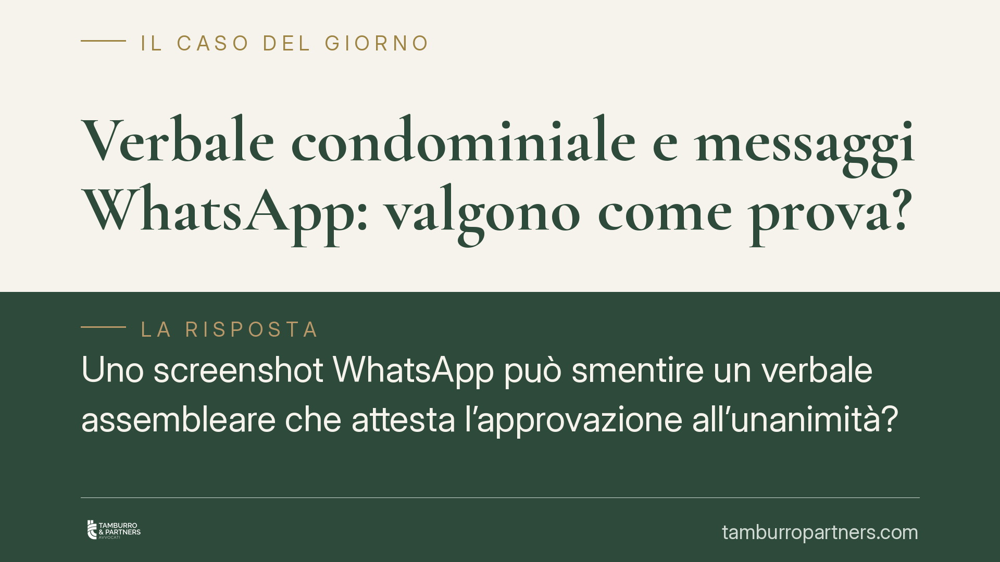

Verbale condominiale e messaggi WhatsApp: valgono come prova?
Uno screenshot WhatsApp può smentire un verbale assembleare che attesta l'approvazione all'unanimità? Per la Corte d'Appello di Brescia no, se la copia fotografica non è certa e il messaggio non è attribuibile con sicurezza al mittente. La pronuncia conferma quanto sia delicato usare la messaggistica come prova in giudizio e ricorda l'importanza di una verbalizzazione accurata.

Il caso
Una condomina impugnava la delibera assembleare sostenendo che il verbale fosse falso nella parte in cui attestava l'approvazione all'unanimità. A sostegno produceva alcuni messaggi WhatsApp che, a suo dire, dimostravano un dissenso espresso da alcuni partecipanti.
In primo grado l'impugnazione veniva rigettata. Nel corso del giudizio di appello subentravano gli eredi della condomina, deceduta nelle more del processo: la successione nella posizione processuale è regolata dall'art. 110 c.p.c., che disciplina il subentro della parte venuta meno.
La Corte d'Appello di Brescia confermava il rigetto, ritenendo che i messaggi prodotti non fossero idonei a provare la falsità del verbale.
*(Gli estremi completi della pronuncia — sezione, numero e data del deposito — sono da verificare presso la fonte ufficiale.)*
Inquadramento normativo
Il punto centrale riguarda il valore probatorio di uno screenshot. Un messaggio WhatsApp riprodotto in copia fotografica non è una scrittura privata in senso proprio, ma una riproduzione informatica, disciplinata dall'art. 2712 c.c.
Secondo tale norma, le riproduzioni meccaniche e informatiche formano piena prova dei fatti e delle cose rappresentate *se colui contro il quale sono prodotte non ne disconosce la conformità* ai fatti o alle cose medesime. Il disconoscimento, però, segue un regime proprio: diverso da quello previsto dagli artt. 214 e 215 c.p.c. per la scrittura privata, i quali presuppongono l'attribuzione del documento a un autore determinato attraverso la sottoscrizione.
La distinzione è rilevante. La scrittura privata riconosciuta fa piena prova della provenienza delle dichiarazioni (art. 2702 c.c.). Lo screenshot, invece, prova soltanto la rappresentazione, e il suo valore si indebolisce quando difetta la certezza sulla provenienza del messaggio.
Perché la Corte ha deciso così
La pronuncia individua due debolezze distinte nella prova offerta.
La prima riguarda la forma della produzione: una copia fotografica del messaggio, priva di elementi che ne garantiscano la genuinità, non assicura l'integrità e la fedeltà di quanto rappresentato. L'immagine può essere manipolata, ritagliata o decontestualizzata.
La seconda, più dirimente, attiene all'attribuibilità: non era possibile ricondurre con certezza i messaggi ai singoli partecipanti all'assemblea. Un numero di telefono o un nome visualizzato non dimostrano, da soli, chi abbia effettivamente scritto.
In questo quadro, la Corte ha ritenuto che il verbale — documento redatto dal presidente e dal segretario nelle forme assembleari — conservasse la sua efficacia, non superata da una prova digitale carente sotto entrambi i profili.
Implicazioni pratiche
Per chi gestisce o partecipa alla vita condominiale, la decisione conferma alcuni punti fermi.
Il verbale resta il documento di riferimento sull'andamento e sull'esito dell'assemblea. Contestarne il contenuto richiede una prova solida, non una semplice chat.
La messaggistica digitale non è priva di valore, ma il suo peso in giudizio dipende da come viene acquisita e presentata. Uno screenshot isolato è quasi sempre fragile; serve un supporto tecnico che ne attesti genuinità e provenienza.
Per l'amministratore, la lezione è speculare: un verbale curato, che dà conto in modo puntuale di presenze, deleghe e voti, riduce drasticamente lo spazio per contestazioni successive.
Cosa fare in concreto
- Verbalizzate con precisione presenze, deleghe, millesimi e l'esito di ciascuna votazione, indicando i dissensi e le riserve espresse dai condomini.
- Fate sottoscrivere il verbale da presidente e segretario e conservatene copia nel registro, mettendolo a disposizione dei condomini nei termini di legge.
- Non affidatevi al solo screenshot quando intendete valorizzare una conversazione digitale: una copia fotografica isolata è facilmente contestabile.
- Documentate la prova digitale in modo verificabile, ad esempio con estrazione forense del dispositivo o acquisizione che ne attesti integrità e provenienza.
- Valutate i termini di impugnazione della delibera (trenta giorni ex art. 1137 c.c.) prima di muovervi, tenendo conto della decorrenza differenziata per presenti e assenti.
La pronuncia bresciana non svaluta la messaggistica come strumento probatorio: ne ricorda i limiti. La chat può concorrere a ricostruire i fatti, ma resta prova debole finché non è accompagnata da garanzie di autenticità e attribuibilità.
---
Contributo informativo a cura di Tamburro & Partners - Avv. Giuseppe Tamburro. Non costituisce parere legale.
Ogni condominio ha una storia a sé.
Se gestisci un'amministrazione e vuoi un confronto su una specifica questione condominiale, scrivi allo studio. Ti rispondiamo entro un giorno lavorativo.